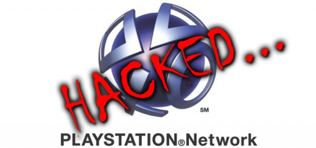

Bravo tu as hacké le PSN

L'attaque : 17 et 19 avril 2011, vol de données personelles et bancaires, 77 millions de victimes, PSN indisponible pendant 3 semaines.
Les données récupérées : noms, adresses, adresses électroniques, dates d'anniversaire, pseudonymes, mots de passe, historiques des paiements, factures.
Les données bancaires chiffrées ont été récupérer mais pas les crytogrammes visuel.
Conséquence : 2 milliard de dollars de pertes direct, comprenant la chute des actions en bourse de Sony et les dédomagement.
Puis 10 millions de dollars par semaine de fermeture du PlayStation Network.
Plusieurs action en justice sont engagée car Sony a reconnu avoir négligé des failles de sécurité qui auraient pu être corrigées bien avant les fuites.
Pour compenser dédomagement financier plus deux jeux offert plus un mois au PlayStationNetwork offert.
Responsable : Inconnu.
Sony accuse les membres du mouvement hacktiviste Anonymous car des fichiers contenant le slogan du mouvement (We are legion) on été retrouver sur les serveurs de Sony.
De plus Anomymous avait déjà attaquer les serveurs de Sony pour protester contre l'attitude procédurière de Sony à l'encontre de George Hotz (GeoHot), l'auteur du piratage de la PlayStation 3.
Cette acussation a été démenti par Anonymous car le vol de données est à l'encontre du modus operandi du mouvement.
Des rumeurs pourrait accuser d'ancien employées de Sony fraichement licencé.
Les failles : Sony utilisait des vesion obselètes de logiciels sur ses serveurs et reconnait qu'il connaisait l'existence de faille dans son réseau.